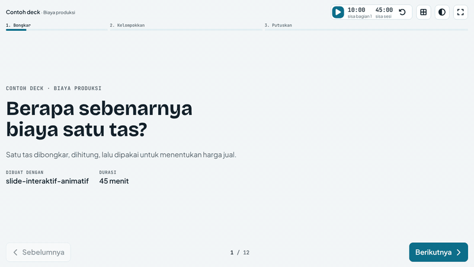

asa-slides
An agent skill that turns lecture, training, project or thesis material into an interactive slide deck, where each key concept is explained by a short step-by-step animation instead of bullet points.

In the example deck, press the right arrow to advance each animation step and the left arrow to go back. Press G for the slide grid. The demos use an Indonesian bag-making business as the running case, so the on-screen text is Indonesian.